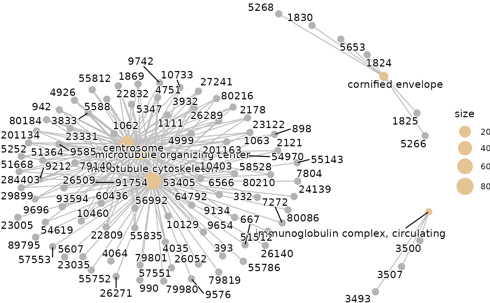
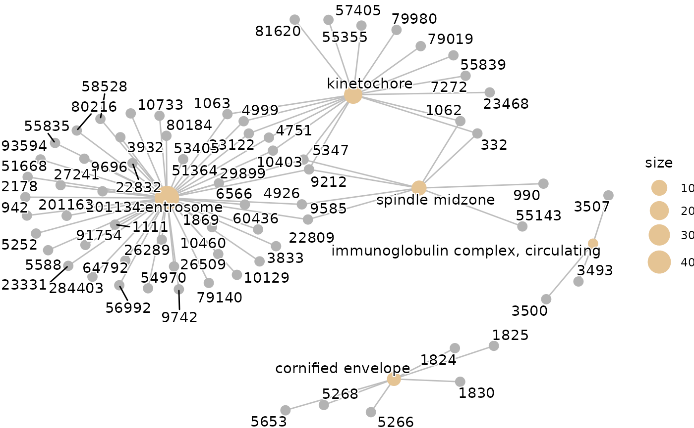

subset_by_size.RdThis utility works to filter results of enrich* test
from clusterProfiler-package,
DOSE-package or
ReactomePA-package
subset_by_size(
x,
minObsSize = 0,
maxObsSize = Inf,
minSetSize = 0,
maxSetSize = Inf
)filtered enrichResults instance
library(clusterProfiler)
#> clusterProfiler v4.14.4 Learn more at https://yulab-smu.top/contribution-knowledge-mining/
#>
#> Please cite:
#>
#> S Xu, E Hu, Y Cai, Z Xie, X Luo, L Zhan, W Tang, Q Wang, B Liu, R Wang,
#> W Xie, T Wu, L Xie, G Yu. Using clusterProfiler to characterize
#> multiomics data. Nature Protocols. 2024, 19(11):3292-3320
#>
#> Attaching package: ‘clusterProfiler’
#> The following object is masked from ‘package:XVector’:
#>
#> slice
#> The following object is masked from ‘package:IRanges’:
#>
#> slice
#> The following object is masked from ‘package:S4Vectors’:
#>
#> rename
#> The following object is masked from ‘package:stats’:
#>
#> filter
library(enrichplot)
#> enrichplot v1.26.6 Learn more at https://yulab-smu.top/contribution-knowledge-mining/
#>
#> Please cite:
#>
#> Guangchuang Yu, Li-Gen Wang, and Qing-Yu He. ChIPseeker: an
#> R/Bioconductor package for ChIP peak annotation, comparison and
#> visualization. Bioinformatics. 2015, 31(14):2382-2383
library(org.Hs.eg.db)
#> Loading required package: AnnotationDbi
#>
#> Attaching package: ‘AnnotationDbi’
#> The following object is masked from ‘package:clusterProfiler’:
#>
#> select
#>
data(gcSample)
x <- enrichGO(gcSample[[6]],
universe = unique(unlist((gcSample))),
OrgDb = "org.Hs.eg.db",
ont = "CC",
pvalueCutoff = 1,
qvalueCutoff = 1,
minGSSize = 0)
res <- x@result
res$geneID <- NULL
rownames(res) <- NULL
head(res)
#> ID Description GeneRatio BgRatio RichFactor
#> 1 GO:0015630 microtubule cytoskeleton 82/560 387/3765 0.2118863
#> 2 GO:0005815 microtubule organizing center 56/560 242/3765 0.2314050
#> 3 GO:0005813 centrosome 47/560 204/3765 0.2303922
#> 4 GO:0042571 immunoglobulin complex, circulating 3/560 3/3765 1.0000000
#> 5 GO:0001533 cornified envelope 6/560 12/3765 0.5000000
#> 6 GO:0000776 kinetochore 17/560 60/3765 0.2833333
#> FoldEnrichment zScore pvalue p.adjust qvalue Count
#> 1 1.424557 3.685246 0.0002611525 0.0949387 0.09386125 82
#> 2 1.555785 3.735623 0.0002747864 0.0949387 0.09386125 56
#> 3 1.548976 3.369668 0.0009524960 0.2193916 0.21690172 47
#> 4 6.723214 4.144728 0.0032755574 0.4143788 0.40967610 3
#> 5 3.361607 3.424631 0.0043761732 0.4143788 0.40967610 6
#> 6 1.904911 2.953195 0.0050560595 0.4143788 0.40967610 17
cnetplot(x)

# E.g. the "cell", "cell part" & "cellular_component" seem too generic
x <- subset_by_size(x, maxObsSize=50)
res <- x@result
res$geneID <- NULL
rownames(res) <- NULL
# Now they are gone
head(res)
#> ID Description GeneRatio BgRatio RichFactor
#> 1 GO:0005813 centrosome 47/560 204/3765 0.2303922
#> 2 GO:0042571 immunoglobulin complex, circulating 3/560 3/3765 1.0000000
#> 3 GO:0001533 cornified envelope 6/560 12/3765 0.5000000
#> 4 GO:0000776 kinetochore 17/560 60/3765 0.2833333
#> 5 GO:0051233 spindle midzone 8/560 20/3765 0.4000000
#> 6 GO:0060170 ciliary membrane 8/560 20/3765 0.4000000
#> FoldEnrichment zScore pvalue p.adjust qvalue Count
#> 1 1.548976 3.369668 0.000952496 0.4463735 NA 47
#> 2 6.723214 4.144728 0.003275557 0.4463735 NA 3
#> 3 3.361607 3.424631 0.004376173 0.4463735 NA 6
#> 4 1.904911 2.953195 0.005056060 0.4463735 NA 17
#> 5 2.689286 3.165899 0.005488744 0.4463735 NA 8
#> 6 2.689286 3.165899 0.005488744 0.4463735 NA 8
cnetplot(x)
